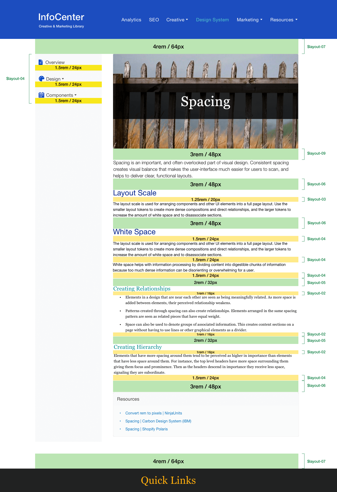

Spacing is an important, and often overlooked part of visual design. Consistent spacing creates visual balance that makes the user-interface much easier for users to scan, and helps to deliver clear, functional layouts.
Layout Scale
The layout scale is used for arranging components and other UI elements into a full page layout. Use the smaller layout tokens to create more dense compositions and direct relationships, and the larger tokens to increase the amount of white space and to disassociate sections.
| Token | rem | px |
|---|---|---|
$spacing-layout-01 |
0.75 | 12 |
$spacing-layout-02 |
1 | 16 |
$spacing-layout-03 |
1.25 | 20 |
$spacing-layout-04 |
1.5 | 24 |
$spacing-layout-05 |
2 | 32 |
$spacing-layout-06 |
3 | 48 |
$spacing-layout-07 |
4 | 64 |
$spacing-layout-08 |
5 | 80 |
$spacing-layout-09 |
6 | 96 |
$spacing-layout-10 |
10 | 160 |
White Space
The amount of empty space – also known as white space – between elements creates relationships and hierarchy. It can be used to break up sections on a page or to help create focus on certain element(s). Therefore, if you have an element or content of high importance on the page, consider giving it extra surrounding space to help it attract focus.
White space helps with information processing by dividing content into digestible chunks of information because too much dense information can be disorienting or overwhelming for a user.
Creating Relationships
- Elements in a design that are near each other are seen as being meaningfully related. As more space is added between elements, their perceived relationship weakens.
- Patterns created through spacing can also create relationships. Elements arranged in the same spacing pattern are seen as related pieces that have equal weight.
- Space can also be used to denote groups of associated information. This creates content sections on a page without having to use lines or other graphical elements as a divider.
Creating Hierarchy
Elements that have more spacing around them tend to be perceived as higher in importance than elements that have less space around them. For instance, the top level headers have more space surrounding them giving them focus and prominence. Then as the headers descend in importance they receive less space, signaling they are subordinate.